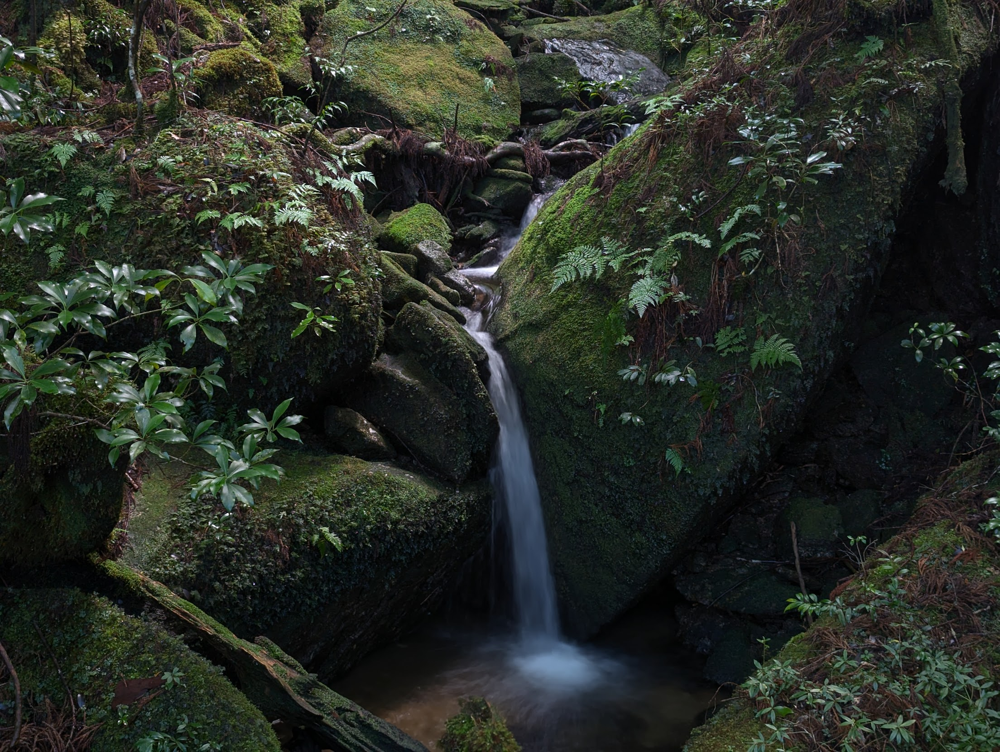
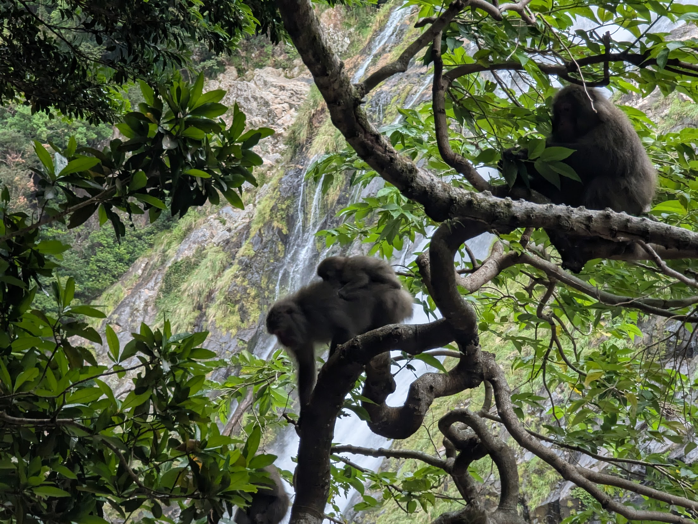
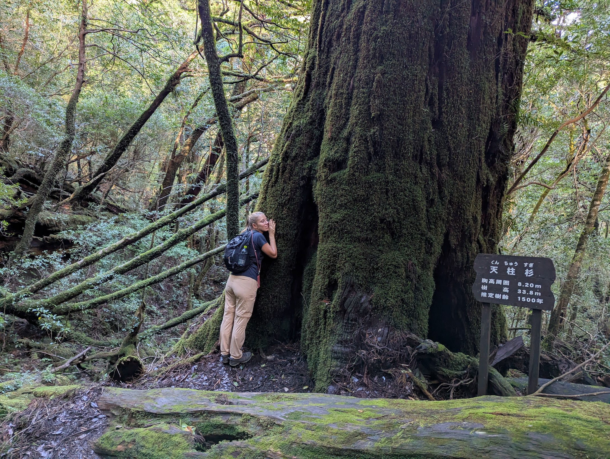
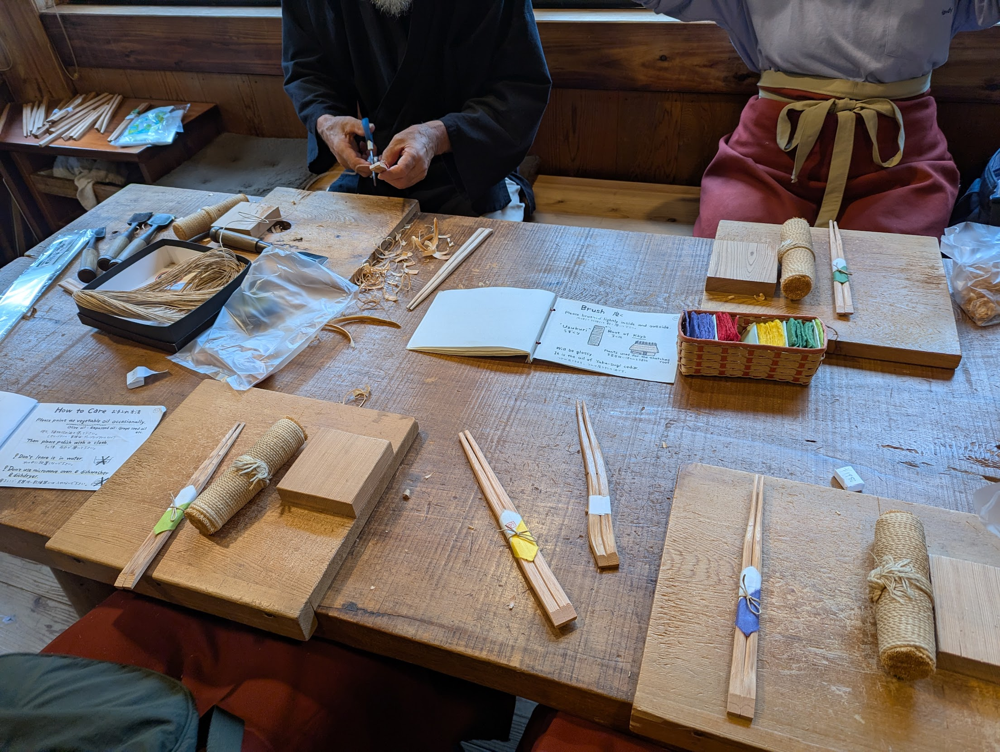
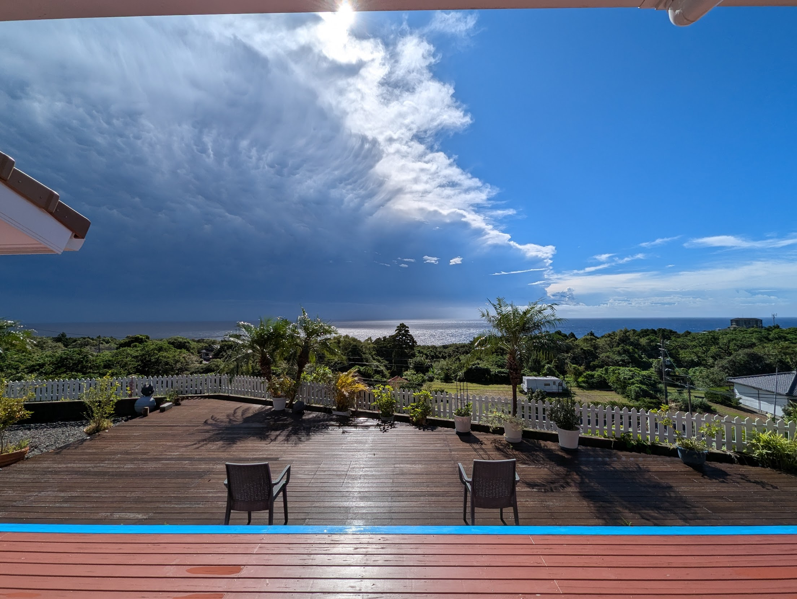
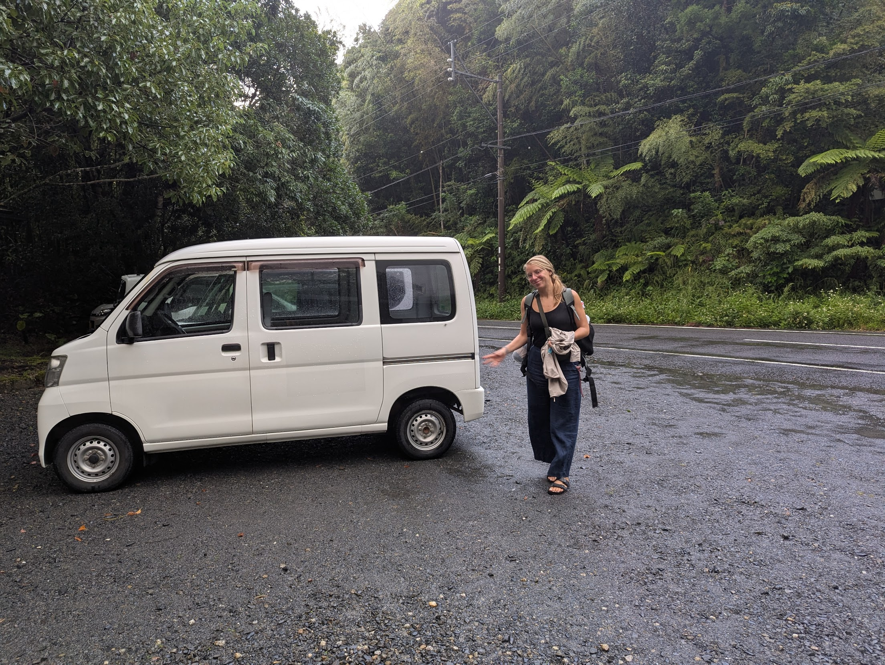

"That's not true!" I exclaimed late into the evening, inspired by several cups of sake in quick succession.
"No, really - over 7000 years." he affirmed with a smile, as he poured us another glass.
I checked online. He was right. Yakushima is the home to cedar trees, known as Yakusugi, which are thought to have been there over 2000 years before our ancestors built the pyramids. They pre-date Jesus. The middle ages. The renaissance. During the chaos of history they were presumably able to find some refuge on this tiny tropical island from civilisation and, relatively undisturbed, permitted to grow to goliath proportions.



We found ourselves, our first night in Yakushima, the only two customers at the small bar of an old Japanese jazzman who had fled 30 years prior from the mainland. The room was dimly lit, with only a handful of low-hanging pendulum lamps illumating the bar at which we sat, reflecting the light gently off his tired face on the other side. In the background played some old jazz tunes. He had moved here to be closer to nature, and had even built his home with his own hands deep in the forest. Having lived for five years in the 80s in New York to work as a jazz musician, he spoke English well, but with a thick Japanese accent in a low, rough voice.
"I've named five waterfalls here myself. Most of the waterfalls on this island don't have names."
And again, he was right. The waterfalls are everywhere. But it's not surprising. It rained every single day of our four-day stay in Yakushima. The island is beautiful yet unwelcoming, the mountain ominously veiled most of the time by a thick black cloud, which only on occasion dispersed and granted a teasing glimpse, yet ostensibly always capable of pulling the rug from under your feet once you decide to ascend into it. Our first day, we learned this the hard way, shivering and waiting for the bus after a four-hour hike, our "waterproof" clothing dragging us down, saturated with rainwater.



Overall, I enjoyed Yakushima. The lush, green forests are genuinely something I have not seen back at home in Switzerland. The locals are extremely accommodating. The food is delicious. Monkeys and deer roam the island, seemingly unperturbed by humans. I get the hype.
But it's not an easy destination to visit. Getting there takes time. It's not cheap. A car is a requirement. Businesses only open for a few days each day.